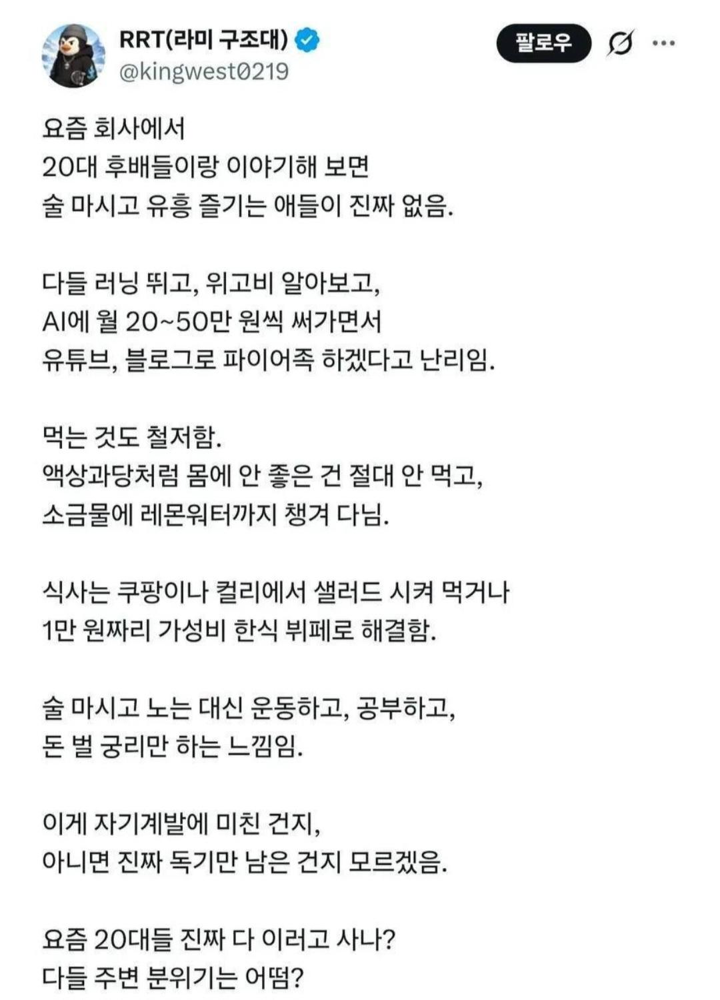

요즘 회사에서 20대 후배들하고 이야기해보면
댓글
운동하는 돼지들 엄청 늘었던데 위고비 안하거나 해도 또 돼지되라. 그리고 술담배도 많이함
자기 계발에 힘쓰는 건 사실인듯 다만 다들 하니까 걍 하는 느낌이고 생각보다 힘들어 하는 듯 아무래도 미래에 대한 불확실이 큼
20대 남성 비만율은 2016년 29.7%에서 지난해 42.6%로 올랐다는데 망상글 아님? ㅋㅋㅋ
20대 남성 전체는 그렇겠지만
쉬었음도 늘고있고
사무직 중 20대, 신입 비중은 더 크게 줄었으니
저 글쓴이가 살면서 만날법한 사람은
실제로 자기관리가 빡세거나 저런 쪽에 관심이 많은 사람일 순 있지
그들만의 리그일지언정 누구든 겪어볼만한 현상이기도함
걍 비만도 많지만
외모평균이 상향된건 확실한듯
본인이 실천하느냐 아니냐를 떠나서
페미붐 지나고
이쁘고 잘생긴 외모는 직무 ,회사를 떠나 도움된다는걸 다들 확실히 인식한 느낌임
예전처럼 술퍼마시고 2차 3차 가고 이런사람이 줄어든건 사실임
술 소비량이 줄었음
옛날에 집대출받은거 갚으면 여유롭게 살고그랬는데 그냥 유투브에서 삶의 목표을 정해줘서 다들 그방향으로 가는것같음
병신같이 살기 vs 자기관리 하기
그야 틀딱 세대들은 대충살아도 다 살아졌잖아
지금은 평생 생존을 걱정하고 살아가야함. 건강하지않으면 평생번돈 그냥 날아갈수도있고 틀세대보다 더 산다면 더 짊어지는것도 많고.
클로드나 지피티는 플러스 요금 정도는 쓸만한듯.
걍 돈은 없고 나올 구멍은 좁고 집값은 비싸고 그러니 자얀스레 허리띠 졸라매는거지
문체가 ㅈㄴ AI같네
그러는 사람만 취업이 된 건가 ㄷㄷ
저거 ㄹㅇ임
자기관리는 그냥 평생 해야함
노후가 불안해서 말이지
집 사려면 까마득하고 직업은 불안하고 노후는 안보이고... 일단 돈이라도 모아두고 안아프게 건강 관리하면서 기회를 봐야지...